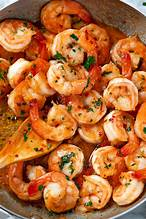

Jynsbhil is a warm-hearted and loving son who treasures family moments and always puts his loved ones first. He’s known for his genuine care, unwavering support, and the effort he puts into making those around him feel appreciated.
Alongside his kind and nurturing nature, Jynsbhil has a sporty and energetic side. Whether it's hitting the basketball court, running through the neighborhood, or taking on new physical challenges, he’s always on the move, radiating positivity and determination. His ability to balance his devotion to family with his passion for sports makes him a dynamic and admirable individual.
Jynsbhil’s favorite dish is Butter Garlic Shrimp, a delicious and savory treat he enjoys.
